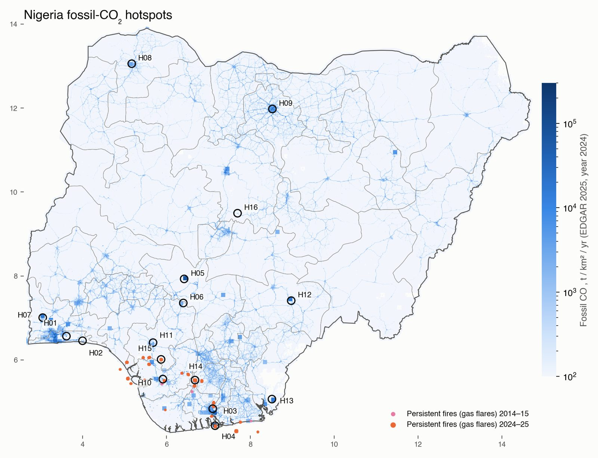
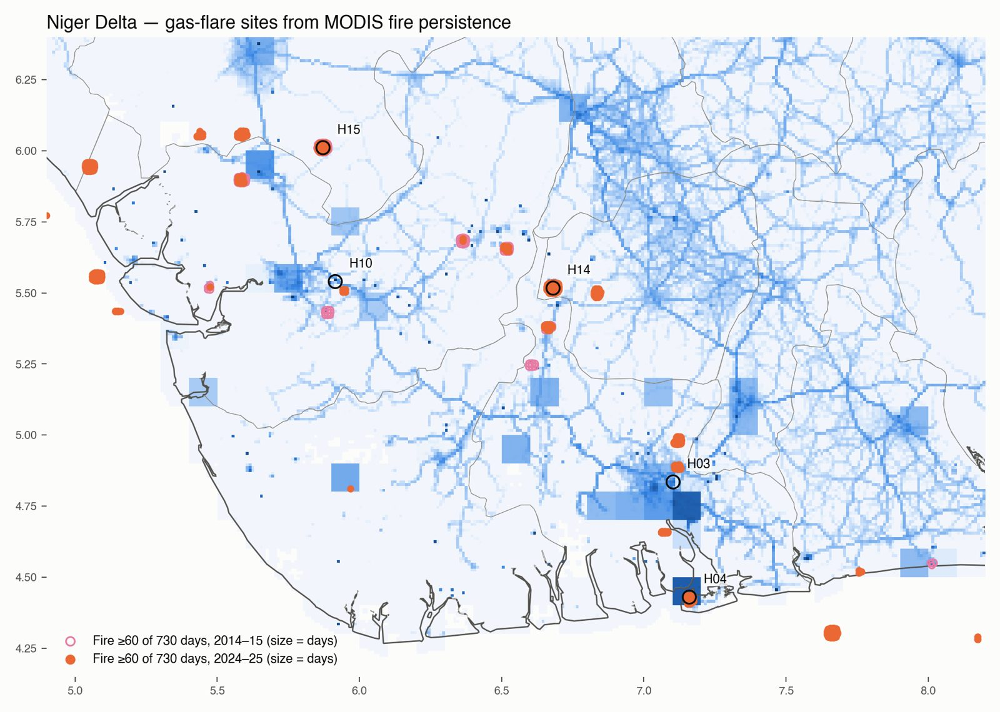
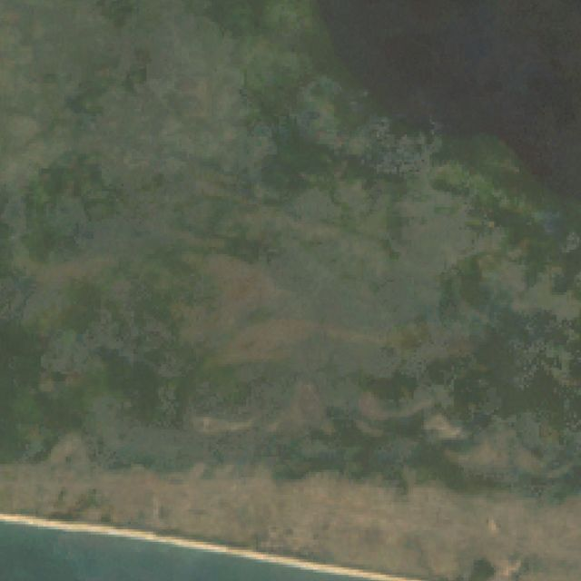
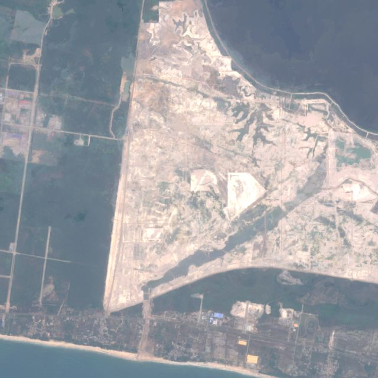
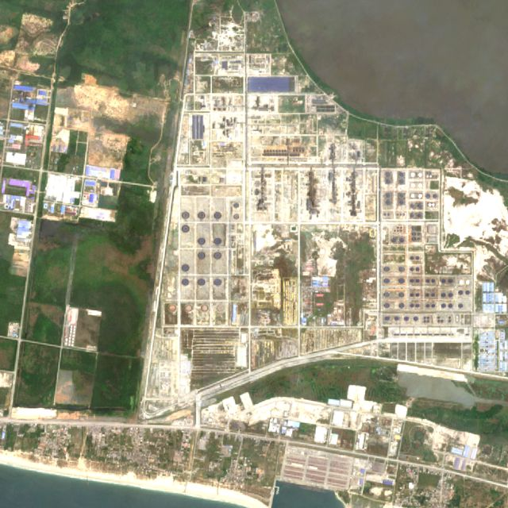
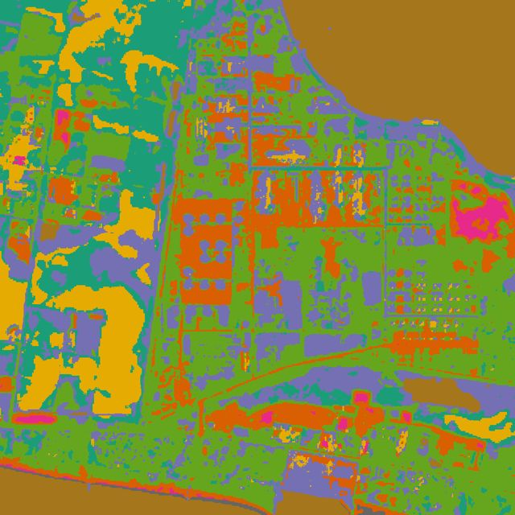
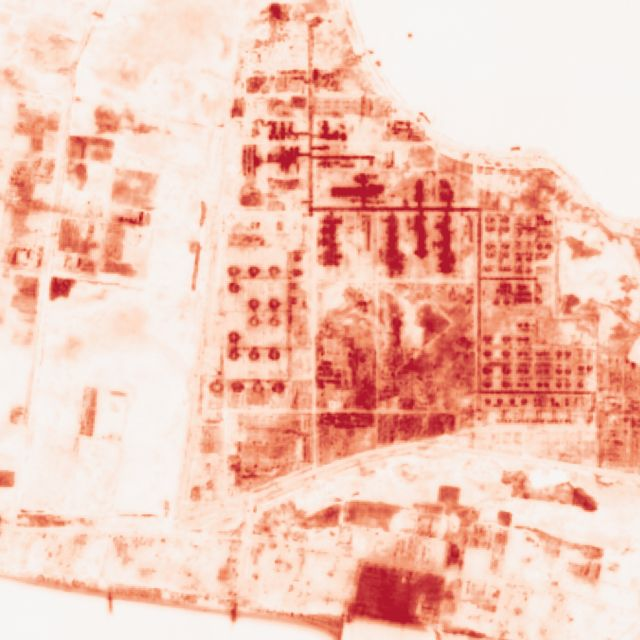

Where Nigeria's fossil carbon dioxide comes from, checked from orbit. I combined the EDGAR 2025 emission grid, Climate TRACE facility estimates, MODIS gas-flare persistence, Sentinel-5P NO₂ and AlphaEarth embeddings. Each site has imagery from 2000–02, 2016–17 and 2025–26.
Dinar Wali · analysis in Google Earth Engine + Python · data to Sep 2026
Two coastal clusters dominate. Lagos (12.2 Mt, 9.7%) and Port Harcourt–Onne–Eleme (9.3 Mt, 7.4%) together emit one sixth of the national total. Bonny Island LNG adds 5.4 Mt from only 100 km².
Cement is the fastest-growing source. Six cement works make the list (Obajana, Okpotu, Ibese, Sokoto, Gboko, Mfamosing). None existed in the 2000–02 Landsat frames. Okpotu, Mfamosing and Gboko show NO₂ growth well above the national background.
The Dangote refinery is the newest major emitter. It went from bush in 2002 to sand fill in 2017 to a complete refinery in 2025. Climate TRACE estimates 2.65 Mt in 2024, and EDGAR's 1 km grid does not show it yet.
The emission inventory misplaces gas flares. EDGAR spreads oil-and-gas emissions over coarse 0.1° blocks. The flares that MODIS sees burning on 60+ days a year mostly sit outside those blocks. Satellite fire persistence is the better locator.
One inventory hotspot is false. A 0.69 Mt single-pixel point in southern Kaduna has no plant in any image and no NO₂ signal.
National map

EDGAR 2025 1 km fossil CO₂ for 2024, log scale. Circles are the 16 candidate hotspots. Orange and pink dots are 1 km pixels with MODIS fire on at least 60 of 730 days.
Ranking
Two independent inventories per site. The blue bar is the EDGAR 1 km cluster around the site (all sectors). The orange bar is Climate TRACE's estimate for the largest single facility there. Where they disagree strongly, the satellite imagery shows which is right: EDGAR misses the new Dangote refinery, Okpotu and Sokoto plants.
EDGAR 1 km cluster, 2024Climate TRACE largest facility, 2024
Hover a bar for the exact value. Flare sites are not ranked here because neither inventory gives a per-site figure for them.
Gas flaring in the Niger Delta
Flaring is Nigeria's best-known CO₂ source, but inventories place it badly. I mapped it directly: every 1 km MODIS pixel with fire on 60 or more of 730 days counts as a persistent fire. Savanna fires last days, so a pixel that burns for months is a flare.
That gives 156 pixels in 23 sites in 2024–25, and 75 pixels in 9 sites in 2014–15. All lie between 4.3° and 6.1° N, in the oil-producing belt and offshore.
The jump in detections is not a measure of flared volume. MODIS's ageing orbits changed overpass times after 2020, and the World Bank's gas-flaring reports show Nigerian volumes falling. Use the sites, not the count, as the finding.

Open pink: 2014–15. Filled orange: 2024–25. Size scales with detection days.
Hotspot atlas
Each site shows three time slices of true-colour imagery from Earth Engine, then the AlphaEarth embedding analysis from the original script. The script's k-means clustering is run per site with k = 8 and the same clusterer for 2017 and 2024. Its companion change map is the dot product of the 2017 and 2024 embedding vectors, where red means the surface changed.
H01
Lagos metro – Egbin power station / Ikorodu
Lagos · 6.564° N, 3.615° E · Urban + power
Nigeria's largest fossil-CO₂ cluster: 962 km² of Lagos with road transport, the Egbin gas plant and Ikeja–Agbara industry. Emissions roughly doubled 2005→2015, then flattened. NO₂ growth (+12%) is below the national background (+16.5%).
Egbin power station: 2.06 Mt POWER BARGE EBUTE: 0.39 Mt
NO₂ 2025 vs national median
×2.27
NO₂ change 2019 → 2025
+12% (-5% vs background)
Surface changed 2017 → 2024
0.2% of 2 km radius
H02
Dangote Petroleum Refinery, Lekki FTZ
Lagos · 6.455° N, 3.999° E · Refinery (new 2024)
Bush in 2000–02, a sand-filled platform in 2016–17, and a complete 650,000 bbl/day refinery with tank farms by 2025–26. Climate TRACE puts it at 2.65 Mt in 2024, its first operating year. EDGAR's 1 km grid does not show it yet. AlphaEarth flags 58% of the surrounding 2 km as changed since 2017.

Landsat 7 · 2000–02

Sentinel-2 · 2016–17

Sentinel-2 · 2025–26 (latest)

AlphaEarth k-means (k=8) · 2024

AlphaEarth change 2017→2024 (red = changed)
Climate TRACE 2024
Dangote Petroleum Refinery: 2.65 Mt
NO₂ 2025 vs national median
×1.61
NO₂ change 2019 → 2025
+22% (+6% vs background)
Surface changed 2017 → 2024
58.2% of 2 km radius
H03
Port Harcourt – Onne – Eleme industrial belt
Rivers · 4.835° N, 7.103° E · Fertiliser + refinery + power
Second-largest cluster: the Port Harcourt and Onne fertiliser complexes (3.15 + 1.64 Mt), the Eleme refineries, and the Afam V/VI power stations. It has the highest NO₂ of any site (×2.34 the national median), and persistent flares sit on its southern and eastern edges.
Port Harcourt Fertilizer Complex: 3.15 Mt Indorama Eleme Petrochemical, Port Harcourt: 0.38 Mt
NO₂ 2025 vs national median
×2.34
NO₂ change 2019 → 2025
+10% (-6% vs background)
Surface changed 2017 → 2024
0.4% of 2 km radius
H04
Bonny Island – NLNG
Rivers · 4.430° N, 7.160° E · LNG + gas
The NLNG trains and their power plant on Bonny Island. Bonny is the national LNG export point. CO₂ stripped from the feed gas, plus fuel burned on site, gives a 5.4 Mt EDGAR cluster in only 100 km². Persistent fire pixels sit on the plant every year.
Bonny Island LNG power plant: 0.59 Mt BONNY ISLAND TERMINAL: 0.14 Mt
NO₂ 2025 vs national median
×1.95
NO₂ change 2019 → 2025
-5% (-21% vs background)
Surface changed 2017 → 2024
2.3% of 2 km radius
H05
Obajana Cement (Dangote)
Kogi · 7.929° N, 6.422° E · Cement
Africa's largest cement plant. The 2000–02 frame is untouched savanna; the plant was built later that decade. EDGAR's emissions for this cell rose from 0.7 to 6.5 Mt between 2005 and 2025. Climate TRACE estimates 3.87 Mt for the plant itself.
Absent from EDGAR's grid, but Climate TRACE estimates 2.83 Mt. Imagery shows a small works in 2016–17 grown into a multi-line plant with new quarry benches by 2025–26. NO₂ rose 45% between 2019 and 2025, the strongest rise above background of any site.
Dangote's Ibese works in Ogun: no plant in 2000–02, kilns by 2016–17, and expanded quarries and clinker storage by 2025–26. 2.0–2.2 Mt/yr. NO₂ ×2.28 the national median.
The far north's only large point source, at about 2.4 Mt (Climate TRACE). New kiln lines and quarry floors appear between 2016–17 and 2025–26. EDGAR under-allocates it.
A transport-dominated urban cluster of 310 km². This hotspot comes from road fuel and generators, not one chimney. Emissions rose from 2.3 to 4.1 Mt between 2005 and 2025 at 0.1°.
Ughelli gas-fired station (1.81 Mt, Climate TRACE). Persistent flares from the surrounding Ughelli fields sit just south-east. EDGAR's estimate for the 0.1° cells here fell slightly from 3.2 to 2.6 Mt over 2005–2025.
Azura-Edo IPP: cleared ground in 2016–17 and an operating 461 MW plant by 2025–26, beside the older Ihovbor station. Climate TRACE estimates 2.12 Mt for Azura alone.
Azura-Edo IPP power station: 2.12 Mt Ihovbor power station: 0.60 Mt
NO₂ 2025 vs national median
×1.76
NO₂ change 2019 → 2025
+10% (-6% vs background)
Surface changed 2017 → 2024
0.2% of 2 km radius
H12
Gboko Cement (Dangote)
Benue · 7.411° N, 8.974° E · Cement
Dangote Gboko in Benue: quarry pit and kiln lines grow steadily across the three frames. NO₂ rose 31% between 2019 and 2025, which is above the background.
Lafarge Mfamosing near Calabar: a rural landscape in 2000–02, the plant and quarry by 2016–17, and a second quarry by 2025–26. NO₂ rose 36% between 2019 and 2025.
The largest persistent gas-flare site of 2024–25, with fire on up to 229 of 730 days across 19 km². It was not in the 2014–15 top list. Climate TRACE assigns 9.5 Mt to the onshore conventional fields that include this area.
The largest flare site of 2014–15, with fire on up to 255 days, and still second in 2024–25. Flares emit little NO₂ (×1.16), so the satellite fire record is the evidence here, not the NO₂ map.
Rejected. EDGAR puts 0.69 Mt into a single 1 km pixel here that first appears in 2025. The imagery shows farmland and villages, NO₂ is at background (×1.11), and no facility is listed. This is an inventory allocation error, not an emitter.
Clusters of 1 km pixels above 3,300 t/km²/yr, the threshold above which pixels together hold half the national total. Rows 11–20 not in the atlas include the Kaduna refinery (row 11), Geregu power (12), Onitsha (13) and Abuja (18).
#
State
Centroid
Mt CO₂
Share
km²
Dominant sector
0.1° trend 2005/15/25 (Mt)
Largest Climate TRACE facility nearby
1
Lagos
6.642, 3.332
12.24
9.7%
962
Industry
10.3 / 17.5 / 18.8
Dangote Cement Ojibawo Cement Plant
2
Rivers
4.835, 7.194
9.33
7.4%
616
Industry
8.9 / 11.8 / 16.6
Nigeria_Niger Delta_Conventional shelf
3
Kogi
7.950, 6.450
6.13
4.8%
100
Industry
0.7 / 4.4 / 6.5
Dangote Cement Obajana Cement Plant
4
Rivers
4.449, 7.151
5.39
4.3%
100
Energy
2.4 / 4.4 / 7.0
Bonny
5
Kano
11.980, 8.526
2.30
1.8%
310
Transport
2.3 / 3.4 / 4.1
Mallam Aminu Kano International Airport
6
Ogun
7.048, 3.050
1.98
1.6%
101
Industry
0.3 / 1.6 / 2.3
Dangote Cement Ojibawo Cement Plant
7
Delta
5.529, 5.858
1.74
1.4%
113
Industry
3.2 / 2.5 / 2.6
Ughelli power station
8
Benue
7.450, 8.950
1.71
1.3%
100
Industry
0.2 / 1.3 / 1.9
Dangote Cement Gboko Cement Plant
9
Cross River
5.050, 8.549
1.56
1.2%
100
Industry
0.2 / 1.2 / 1.7
Lafarge Africa Mfamosing Cement Plant
10
Delta
5.930, 5.639
1.40
1.1%
107
Energy
2.9 / 2.8 / 1.9
Sapele power station
11
Kaduna
10.503, 7.438
1.36
1.1%
155
Industry
1.7 / 1.8 / 1.8
Kaduna International Airport
12
Kogi
7.505, 6.677
1.11
0.9%
25
Industry
0.9 / 2.2 / 1.4
Geregu II power station
13
Anambra
6.074, 6.861
1.08
0.9%
193
Transport
3.6 / 3.2 / 4.0
Oando Kwale power station
14
Cross River
4.969, 8.344
0.84
0.7%
118
Industry
0.3 / 0.7 / 1.0
Esuk Utan
15
Edo
6.378, 5.656
0.79
0.6%
52
Energy
0.4 / 1.1 / 1.3
Azura-Edo IPP power station
16
Kaduna
9.495, 7.695
0.69
0.5%
1
Industry
0.0 / 0.0 / 0.7
—
17
Rivers
5.115, 6.488
0.69
0.5%
57
Industry
3.3 / 1.8 / 1.9
Nigeria_Niger Delta_Conventional onshore
18
Abuja
9.078, 7.399
0.69
0.5%
122
Transport
1.0 / 1.5 / 1.8
Nnamdi Azikiwe International Airport
19
Oyo
7.394, 3.935
0.63
0.5%
117
Transport
0.8 / 1.2 / 1.4
Ibadan Airport
20
Gombe
10.949, 11.451
0.55
0.4%
100
Industry
0.1 / 0.5 / 0.7
Lafarge Africa Ashaka Cement Plant
Method and limits
The linked script. The Earth Engine link contains Google's Satellite Embedding (AlphaEarth) k-means example. It samples 500 pixels of the 64-band annual embedding, trains wekaKMeans for k = 2 to 50, and maps the clusters. Its drawn region is a rectangle in Iowa (−93.1°, 42.3°), and it holds no CO₂ data. Embeddings describe what a surface looks like, not what it emits. So I kept the method for characterising and change-dating each hotspot, and located the hotspots with emission data.
Emissions. EDGAR 2025 GHG 1 km grid for 2024, all six sectors, which sums to 126.7 Mt for Nigeria. The 0.1° grids for 2005, 2015 and 2025 give trends; units are tonnes per year, checked against the national total. Climate TRACE v6 provides 2024 facility estimates for 15,829 Nigerian assets, of which 259 are point sources.
Satellite checks. Sentinel-5P tropospheric NO₂, annual means for 2019 and 2025, inside a 5 km radius against the national median. The national median itself rose 16.5% over that period, partly from processor upgrades, so a site's growth is read against that background. MODIS fire (FIRMS) detection days give the flares. Sentinel-2 (Cloud Score+ masked median of the 20 clearest scenes) and Landsat 7 (pre-SLC-failure, 1999–2003) give the imagery.
Not covered. Satellites cannot yet map CO₂ itself at facility scale over Nigeria. OCO-2/3 sample narrow tracks, and a plant's plume is under 1% of the column. Land-use and fire CO₂ are outside this fossil-CO₂ analysis. Climate TRACE puts forest and savanna fires alone near 100 Mt CO₂ in 2024, so they deserve a separate study.
Google Earth Pro file
Nigeria_CO2_Hotspots.kmz has every hotspot with three camera views: latest, ~2015 and ~2005. Each view carries a date that sets Earth Pro's historical-imagery slider. It also includes both flare layers and the EDGAR 1 km overlay, which is off by default. Turn on View ▸ Historical Imagery first, then double-click a view to fly there at that date.